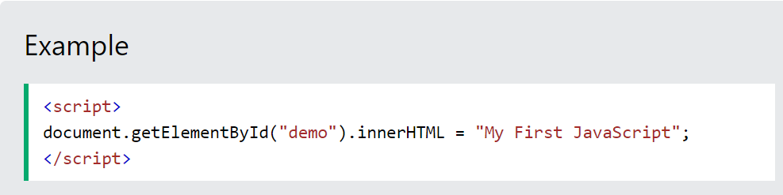
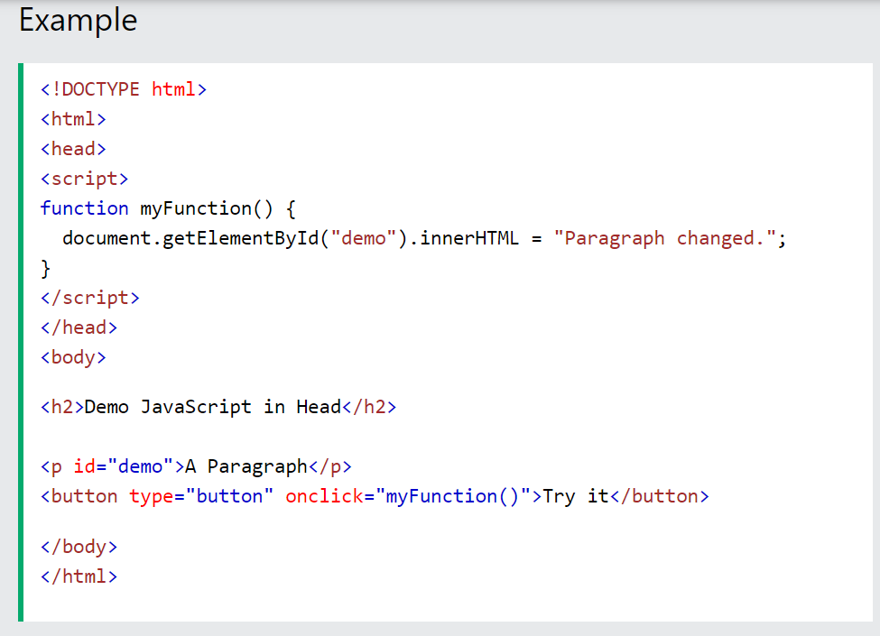
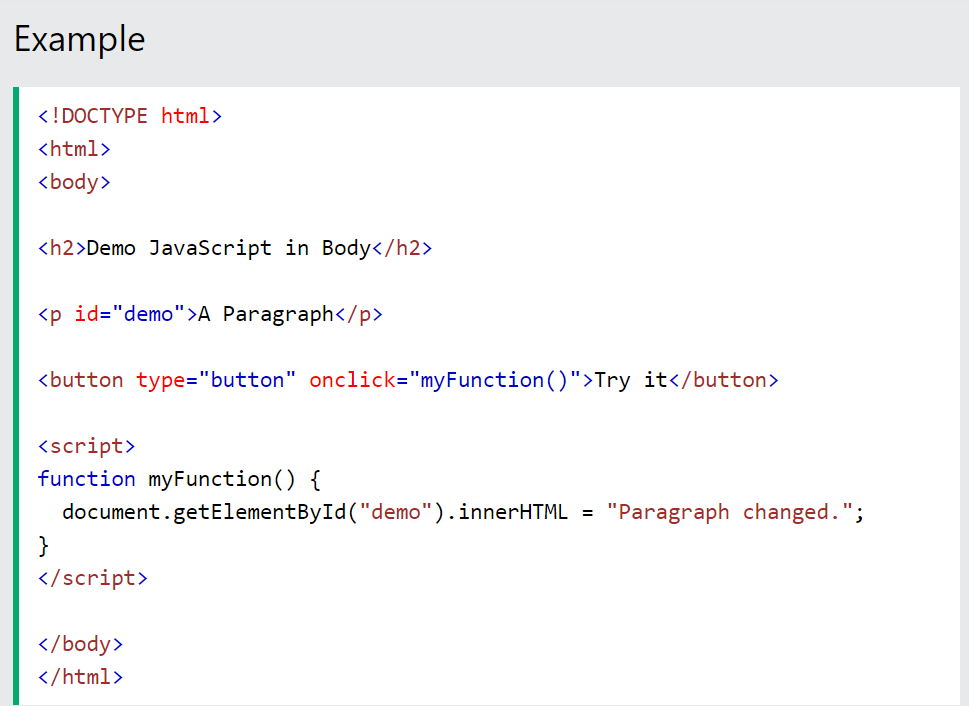
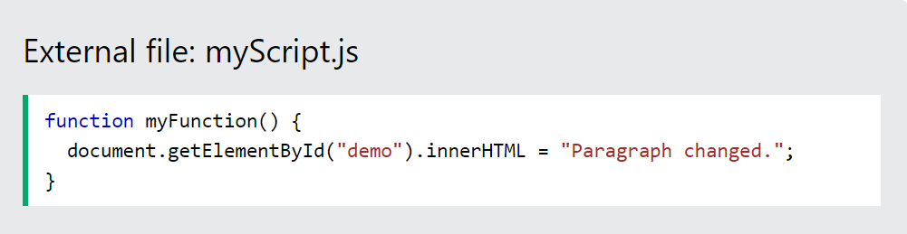
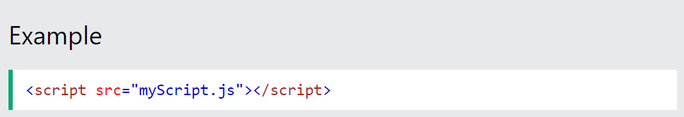
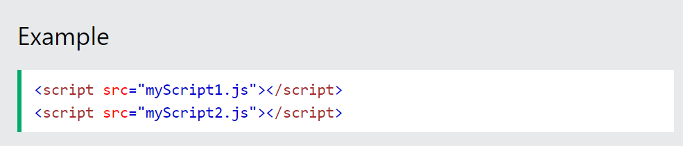
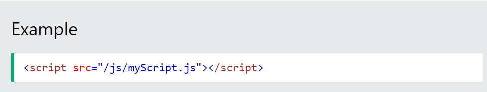
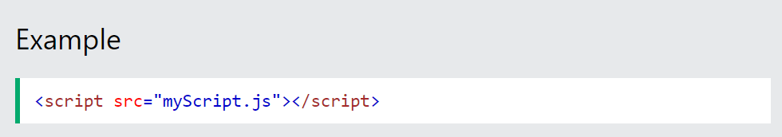

JavaScript Where To
The <script> Tag
In HTML, JavaScript code is inserted between <script> and </script> tags.

Old JavaScript examples may use a type attribute: <script type="text/javascript">
The type attribute is not required. JavaScript is the default scripting language in HTML.
JavaScript Functions and Events
A JavaScript function is a block of JavaScript code, that can be executed when "called" for.
For example, a function can be called when an event occurs, like when the user clicks a button.
JavaScript in <head> or <body>
You can place any number of scripts in an HTML document.
Scripts can be placed in the <body>, or in the <head> section of an HTML page, or in both.
JavaScript in <head>
In this example, a JavaScript function is placed in the <head> section of an HTML page.
The function is invoked (called) when a button is clicked:

JavaScript in <body>
In this example, a JavaScript function is placed in the <body> section of an HTML page.
The function is invoked (called) when a button is clicked:

Placing scripts at the bottom of the
element improves the display speed, because script interpretation slows down the display.
External JavaScript

External scripts are practical when the same code is used in many different web pages.
JavaScript files have the file extension .js.
To use an external script, put the name of the script file in the src (source) attribute of a <script>tag:

You can place an external script reference in <head> or <body> as you like.
The script will behave as if it was located exactly where the <script> tag is located.
External scripts cannot contain <script> tags.
External JavaScript Advantages
Placing scripts in external files has some advantages:
-
It separates HTML and code
-
It makes HTML and JavaScript easier to read and maintain
-
Cached JavaScript files can speed up page loads
To add several script files to one page - use several script tags:

External References
An external script can be referenced in 3 different ways:
-
With a full URL (a full web address)
-
With a file path (like /js/)
-
Without any path
This example uses a full URL to link to myScript.js:

This example uses a file path to link to myScript.js:

This example uses no path to link to myScript.js:
